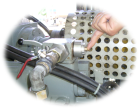
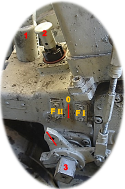

|
|
DH 9500 tipi manevra lokomotifler için ilgili bilgilere konu başlıklarına dokunarak ulaşabilirsiniz.

✦1.Bataryanın düşük olmamalı
✦2.Akü grubundaki 250 A’lik bıçaklı sigortanın sağlam olmalı
✦3.S3 anahtarının devrede olmalı
✦4.S1 100 A’lik sigortanın tanzimli olması
✦5.S2 marş anahtarının (2) konuma alınmış olmalı
✦6.Kumanda masasındaki şanzıman anahtarının kapalı olmalı
✦7.Hareket-fren şalterinin nötr durumda olmalı
✦8.Ana kumanda masasındaki stop butonunun basılı olmamalı
✦9.Şanzumanın (zero = 0 ) konumunda olmamalı
✦10.Aşırı devir kolunun atık olmamalı
Yeterli yakıt basıncı olmaması durumunda jikleden basınç yükseltilir. (1,5 bar)
✦
Kumanda masası üzerindeki katar freni iptal (Ranfor)
anahtarı iptal
durumda olmalı.
✦
Susta yüklü fren anahtarı 0 (sıfır) konumuna çevrilmelidir.
✦
Tren Cinsine göre triblivalf üzerindeki G-P kolu tanzim
edilmelidir.
✦ Hız kademesi 80 km/s olarak seçilmelidir.
✦Kumanda
masasında şanzıman anahtarı açık duruma getirilmelidir.
Trenin hızı 80 km/s aşarsa konduvitten hava kaybedecek ve dizi frene geçecektir. Şanzıman üzerinden tanzim edilmelidir.
✦
S3 anahtarı kapatılmalıdır

✦Totman iptal musluğu kapatılmalıdır
✦ Modrabl iptal musluğu [B44] kapatılmalıdır
✦ Ana depo hava basıncı 5 atm altına düşürülmelidir.
✦ Şanzıman üzerinde hız kumanda anahtarı sıfır durumuna alınmalıdır.
1-Vidalı kapak çıkarılmalıdır.
2-Pim yukarı çekilip 90 derece çevrilerek derin oluğa gelecek şekilde bırakılmalıdır.
3-Şanzıman anahtarı ile hız ayarı [FI] ve [FII] arasına [0] konumuna getirilmelidir. Pim kendiliğinden derin oluğa oturacaktır.
4-Vidalı kapak yerine vidalanmalıdır.
✦ Şaftlar turbo şanzımandan ayrılmamışsa şanzıman yağı tamamlanmalıdır.
✦ Tren Cinsine göre triblivalf üzerindeki [G-P] kolu tanzim edilmelidir.
✦ Soğuk sevk musluğu [B30] açılmalıdır
✦ Şaftlar turbo şanzımandan ayrılmamışsa şanzıman yağı tamamlanmalıdır.
✦ Fren silindirleri üzerindeki susta yüklü tahliye tijleri elle çekilmelidir.
✦ Trenin hızı 60 km/s olarak belirlenmeli,
✦ Mutlaka fren denemesi yapılmalıdır .
Trenin hızı 64 km/s aşarsa aşırı hız koruması devreye
gireceğinden konduvitten hava kaybedecek ve
dizi frene geçecektir. Şanzıman üzerinden tanzim
edilmelidir.
✦ Hareket fren şalteri "NÖTR" durumuna alınmalıdır.
✦ Totman iptal musluğu ve totman iptal anahtarı kapatılmalıdır
✦ Modrabl iptal musluğu kapatılmalıdır
✦ Susta yüklü fren anahtarı 0 (sıfır) konumuna çevrilmelidir.
✦ Şanzıman açma/kapama anahtarı kapalı duruma alınmalıdır.
✦ Şaftlar turbo şanzımandan ayrılmamışsa şanzıman yağı tamamlanmalıdır.
✦ Tren Cinsine göre triblivalf üzerindeki G-P kolu tanzim edilmelidir.
✦ Kumanda masasından hız kademesi 80 km/s olarak seçilmelidir.
Trenin hızı 38 km/s aşarsa aşırı hız koruması devreye gireceğinden konduvitten hava kaybedecek ve dizi frene geçecektir. Şanzıman üzerinden tanzim edilmelidir.
✦ Kumanda masası altındaki Totman şalteri tanzim edildilip yön secildiğinde aktif olur.
✦Valse butonuna veya ayak pedalına basılı olması durumunda 60 sn serbest zaman+ 10 sn ışıklı uyarı bu sürenin son 7sn'sinde sesli uyarı + Acil, seri fren gercekleşir.
✦Valse butonu veya ayak pedalı serbest kalması durumunda 7 sn sonra ışıklı ve sesli uyarı+ Acil, seri fren gercekleşir.
Valse butonu veya ayak pedalı serbest bırakıldığında veya basıldığında sistem kendini kurar.
✦ 1- Egzoz gaz sıcaklığının 570 C ‘nin üzerine çıkması
✦ 2- Turbo basıncının 0,6 barın altına düşmesi
✦ 3- Turbo devrinin 68000 d/dk ‘nın üzerine çıkması
✦ 1.Modrabl iptal musluğu kapalı olması
✦ 2.Pnömatik ana depo hava musluğu kapalı olması
✦ 3.Totman hava musluğu ‘’0’’ konumunda olması
✦ 4.Susta yüklü park fren musluğu kapalı olması
✦ 5.AV musluğu kapalı olması (pnömatik sehpada)
✦ 6.Kondüvit basıncı 3,0 atm’nin altında olması
✦ 1-Aşırı devire kaçması ( 2070 d/dk.)
✦ 2-Su seviyesinin düşük olması
✦ 3-Hidrostatik yağ seviyesinin düşük olması
✦ 4-Motor yağ basıncının 1 barın altına düşmesi